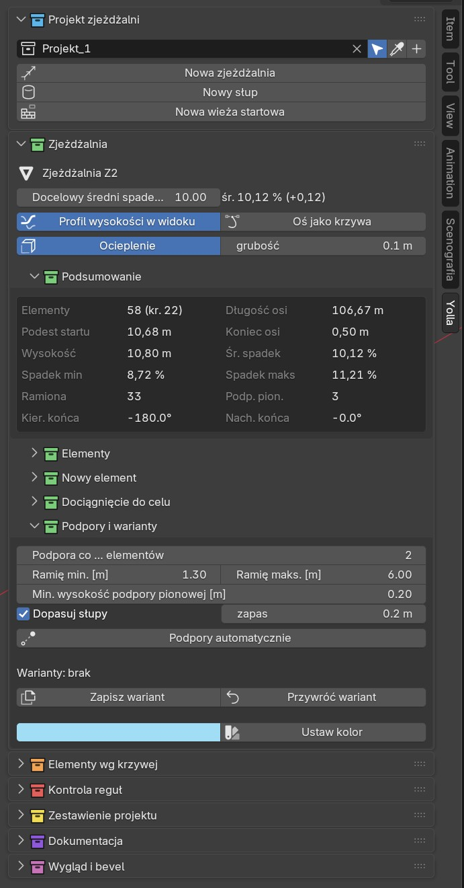
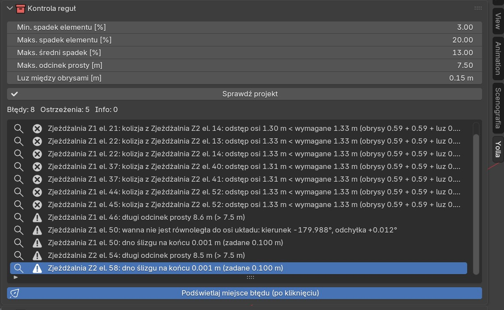
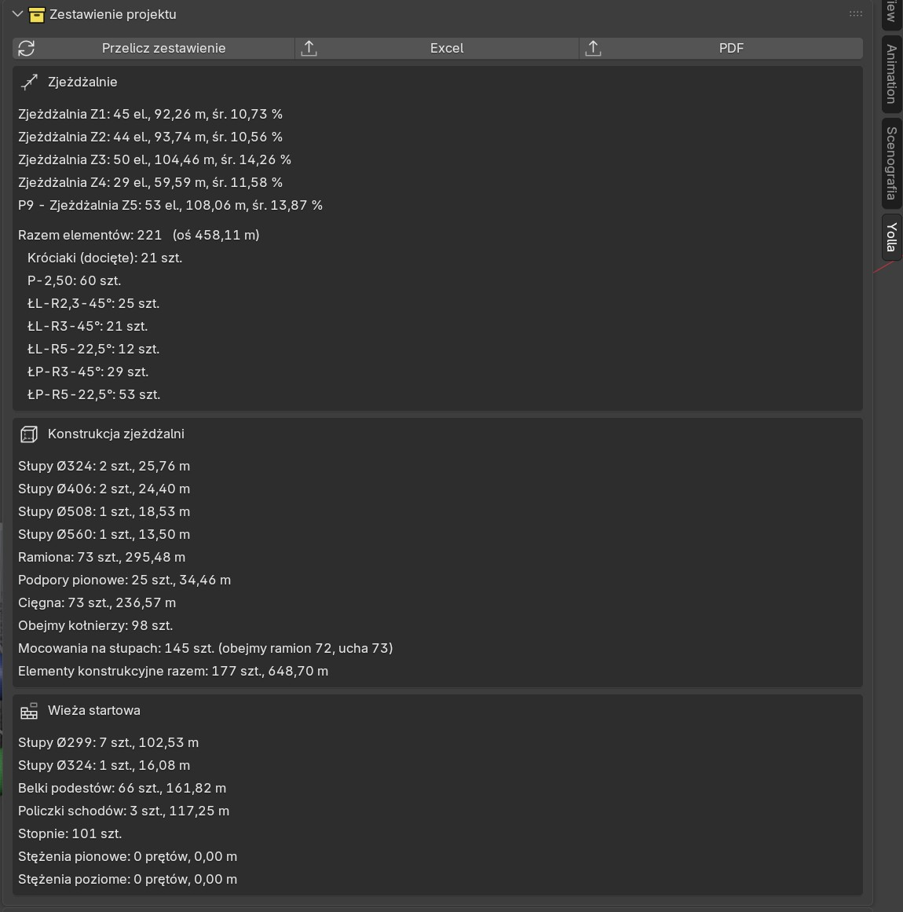
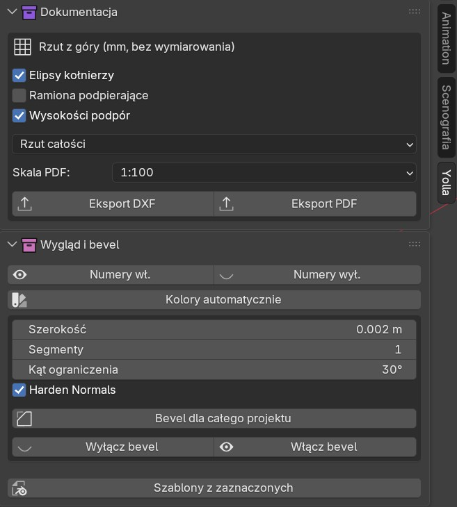
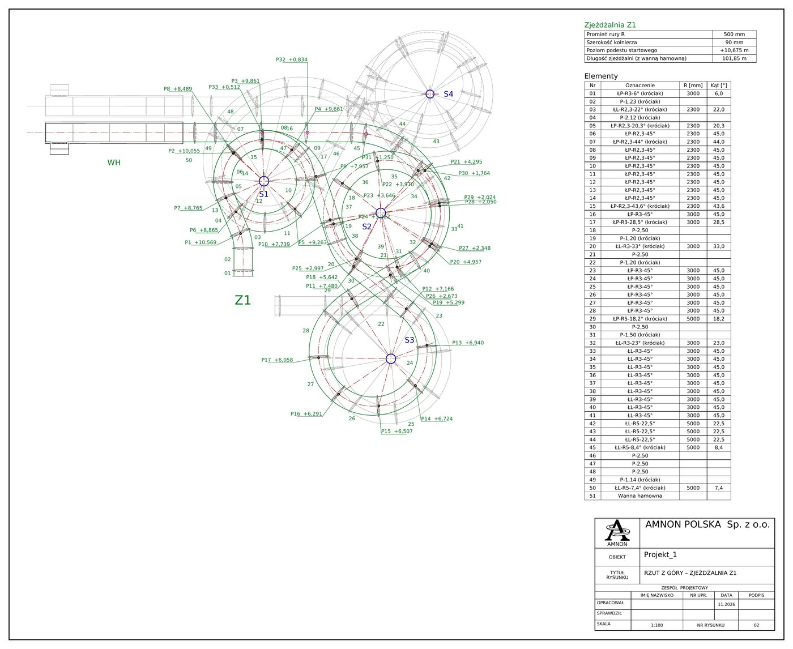
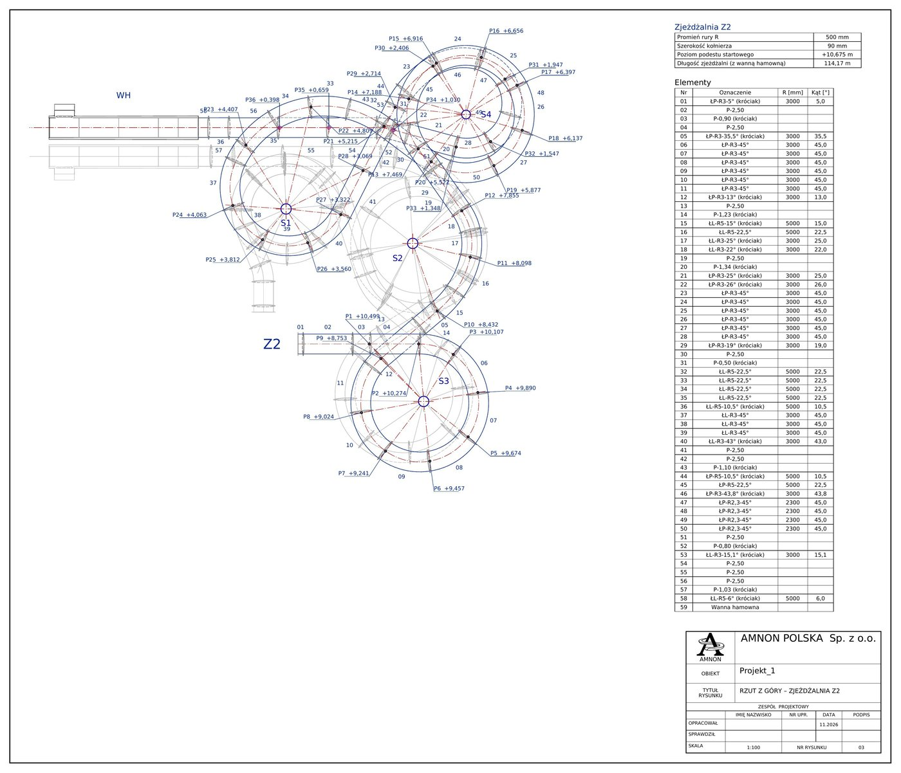

Slide Geometry Nodes i addon Yolla
Slide Geometry Nodes – układ nodów, który buduje kompletną zjeżdżalnię rurową ze stosu modyfikatorów: element startowy, odcinki rury (proste i katalogowe łuki Ø1000) i wannę hamowną. Każdy element zaczyna się tam, gdzie kończy poprzedni – wystarczy podać typ, promień, kąt i obrót, a cała trasa przelicza się na bieżąco. Powstaje rura z kołnierzami, obejmami, izolacją i ramionami podpór, a do tego długość osi, spadek i nachylenie każdego elementu.
Yolla – addon do Blendera zbudowany na tych nodach, który prowadzi zjeżdżalnię od koncepcji do dokumentacji. Z jednego panelu dodajesz zjeżdżalnie, słupy i wieże schodowe, dostajesz podpowiedzi nachylenia, dociągasz trasę do zadanego punktu, a podpory rozstawiają się same. Kontrola wykrywa kolizje, zbyt strome i zbyt płaskie odcinki oraz za długie proste, a zestawienie zlicza elementy, stal i podpory i eksportuje je do Excela i PDF, rzuty zaś do DXF.





